Matrix Factorization for Content Recommendations
with TensorFlow
First world Netflix problems...
Content Filtering
vs
Collaborative Filtering
Content Filtering
vs
Collaborative Filtering
Collaborative Filtering
Use past user behavior to predict future preferences. "Collaborative" because users collaborate to fill in the gaps.
Neighborhood methods
vs
Latent factor models
Neighborhood methods
Recommend based on similarity of users.
E.g. if Bob has rated items x, y and z highly, find other users who have rated those items highly and see what else they like, then recommend to Bob those with the most agreement among the other users.
Neighborhood methods
vs
Latent factor models
Latent factor models
Learn hidden features in items and users that interact in such a way as to produce the ratings we've seen.
Ratings matrices are sparse
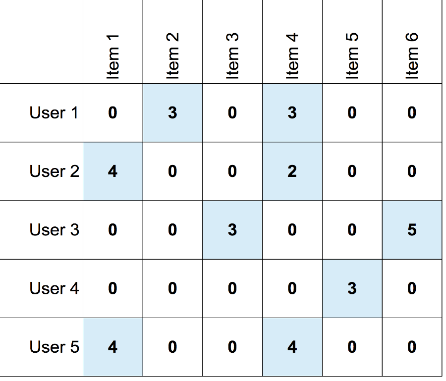Matrix Factorization
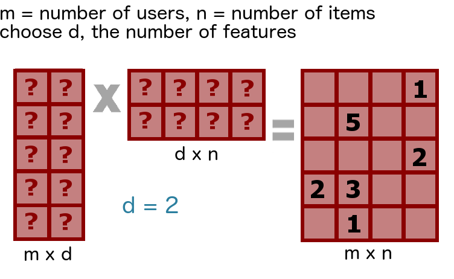Matrix Factorization
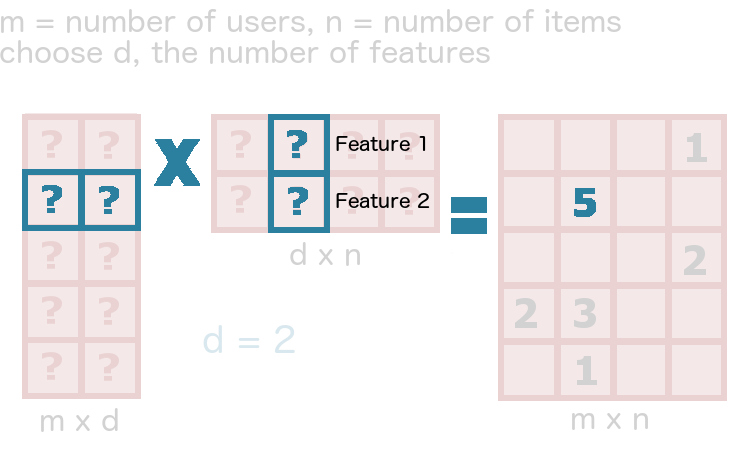Matrix Factorization
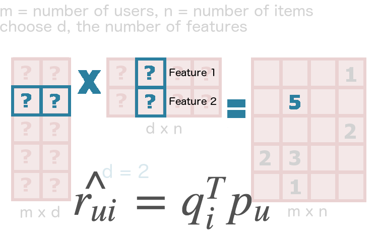
Why use TensorFlow?
- TF is for computations on Tensors, i.e. multi-dimensional arrays
- Tensors can be composed of learnable variables and constants
- Learn using Gradient Descent
- Perfect for the matrix factorization problem!
How?
Sparse representation
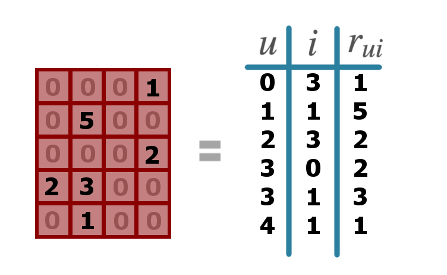Create factors
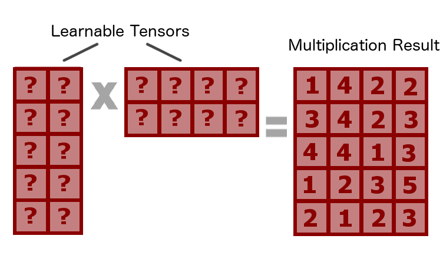Create factors
Extract result

Calculate cost
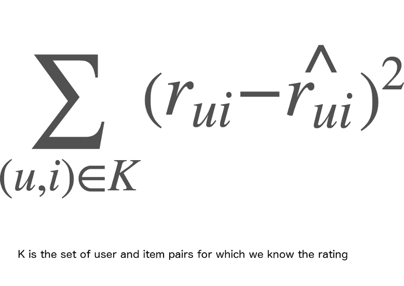Regularization
Shrink the learned factor values by adding the sum of their squares times some lambda parameter to the base cost.
What about mean and bias?
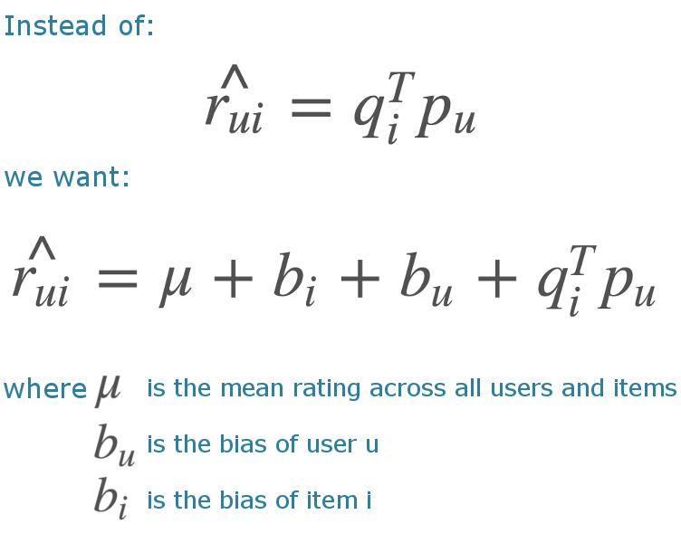
Global mean
The mean rating can be added on to the multiplication result at the end (before calculating cost) - or the data can be centered by subtracting the mean before training (and evaluating against the centered ratings.)
Learning user bias
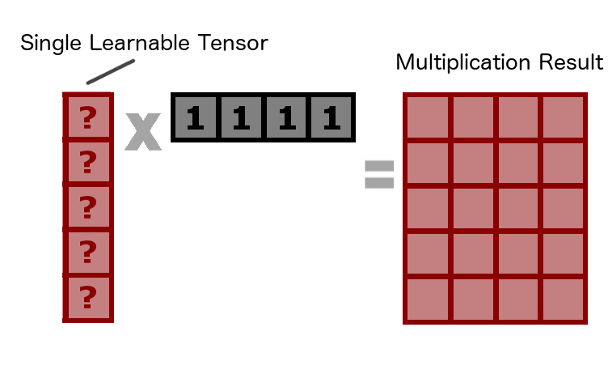Learning item bias
with user bias held fixed
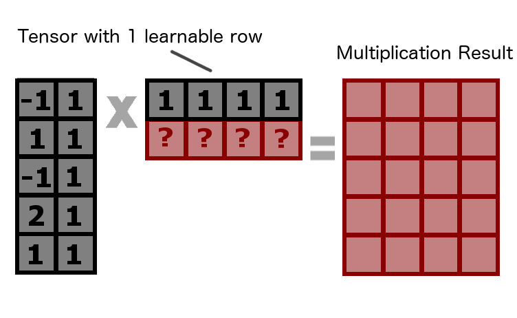Putting it together
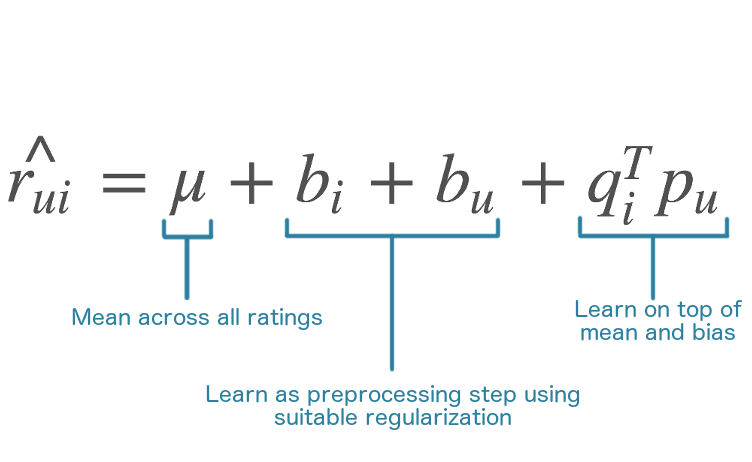Tensors with different learnable components
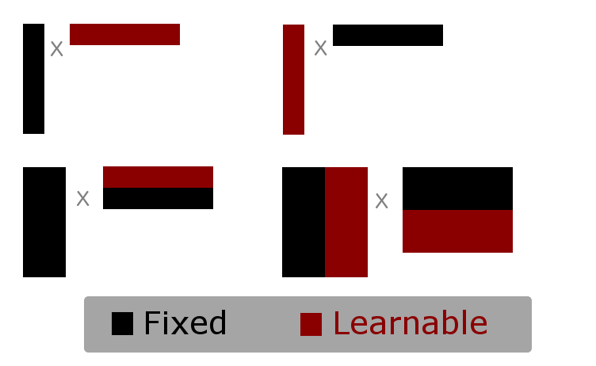Can haz code?
- Factorizer on github
- Beaker notebook
Next Steps
- Try with regularization param that's linear in number of observations
- Try adding movie genre to the mix
Random Stuff
- Always be benchmarking
- Cloud computing and the screen command are your friends
- Google Cloud Platform vs Amazon AWS
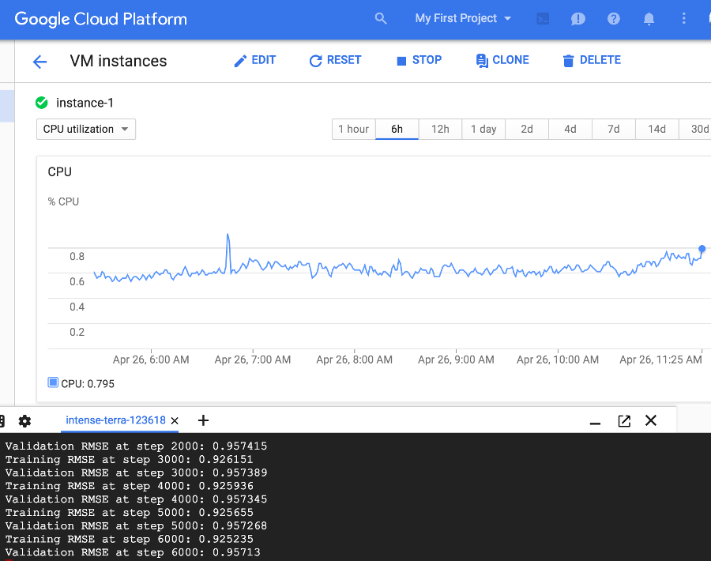
Resources
- TensorFlow Documentation
- Josh's TensorFlow blog post
- RStudio post on Feather file format
- Beaker notebooks
- Paper on Matrix Factorization Techniques for Recommender Systems
- Book on Predicting movie ratings and recommender systems